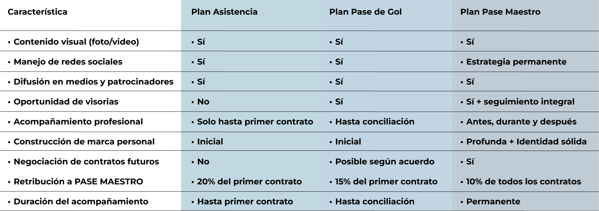

Nosotros somos PASE MAESTRO, dedicados a representar futbolistas en desarrollo y profesionales, ofreciéndoles servicios de scouting, manejo de marca, acompañamiento en procesos de contratación, promoción y patrocinio. Nuestro objetivo es posicionarlos en equipos a nivel internacional, conectándolos con instituciones deportivas y asegurando que todo se lleve a cabo bajo los parámetros legales correspondientes. Nos destacamos por el acompañamiento integral al futbolista, no solo en el ámbito deportivo, sino también en el cuidado de su salud mental, entendiendo que el equilibrio emocional es una prioridad en un entorno lleno de presiones y retos. Además, impulsamos la formación de profesionales integrales mediante un acompañamiento cercano en sus entornos cotidianos, promoviendo su desarrollo personal y académico, y generando vínculos fraternos que favorezcan su crecimiento y desempeño dentro y fuera del campo.
